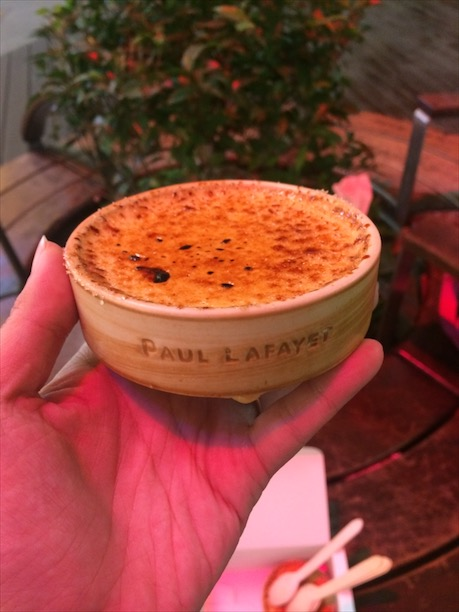

�
Foodies 2
尖沙嘴必吃⎪龍記招牌雲吞
沒有開玩笑，去香港一定要吃
龍記雲吞大概是我人生美食前三名
如果你有到尖沙咀，走過路過不要錯過！
真心不騙！

雲吞撈麵拼生牛肉，敢吃辣的朋友，建議可以先吃三分之一碗原本的味道，
一定要試試看他的辣油，非常好吃！
龍記招牌雲吞地址：
尖沙咀赫德道1-3號利威商業大廈地下3號舖
Shop 3, G/F, Lee Wai Commercial Building, 1-3 Hart Avenue, Tsim Sha Tsui
港鐵尖沙咀/尖東站 N2 出口, 步行約3分鐘
同場推薦：Paul Lafayet 焦糖燉蛋
每次吃完龍記，走回地鐵的路上還是會到 K11 吃吃 Paul Lafayet 甜點店的焦糖燉蛋

喜歡甜食的話，一定也要試試這道甜品！
Paul Lafayet K11 店地址：
尖沙咀河內道18號K11購物藝術館G23舖
Shop G23, K11, 18 Hanoi Road, Tsim Sha Tsui
港鐵尖沙咀/尖東站 N2 出口, 步行約1分鐘